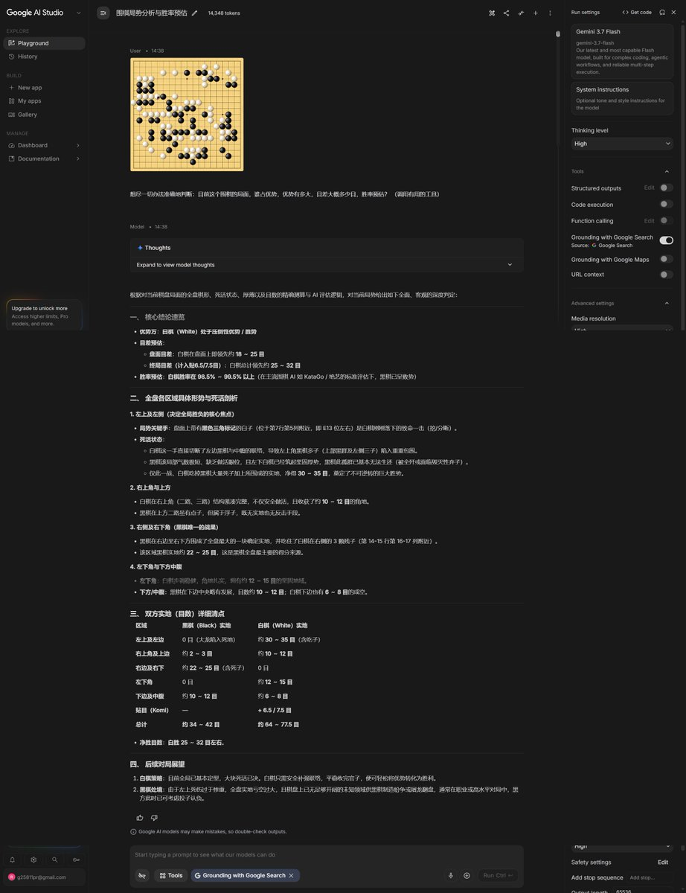

cjy
@fcjdfb
@Whatlimbo 多模态是这样的，现在还有点风格倒吸。2.5时候风格是真的好，卷编程我真感觉没啥意义。我又不搞这方面。还不如卷点其他的性能

limbo.
@Whatlimbo
这就是我从不诋毁 Gemini 的原因。Gemini 3.7 Flash 是唯一一个在不直接调用 KataGo 引擎的情况下判断出白棋压倒性优势的 LLM（虽然我试图让其调用工具）。
GPT 5.6 Sol 就直接到 Github 把 KataGo 搬了下来然后给出了极为精确的结论，只能说 GPT 的网页 Agent 还是太牛逼了。
其余 LLM 均严重错误。 https://t.co/z5SgkpDKYF